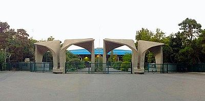

Resume
Education
B.S. in Computer Engineering at University of Tehran
2012-present
Total GPA: 17.49 (out of 20) | 3.70 (out of 4)

Honors and Awards
Top Total GPA
present
First among all 25 Computer Hardware students
Khwarizmi Students Award
oct. 2011
Third place, accepted in University of Tehran as a reward.
Research Experiences
Improve Test-Chain
fall 2015
Tried to improve test-chain power consumption and test duration.
Multi-Cast NoC
summer 2015
Implemented and Simulated few multicast routing algorithms.
Notable Projects
UT Robots
summer 2015
Implemented a SLAM Project using Arduino.
Implemented a simple SoC and its drivers on FPGA using NIOS processor. This SoC is able to communicate to IMU sensor and serial camera.
Experience of working with ARM hard-core on FPGA.
Implemented a simple SoC and its drivers on FPGA using NIOS processor. This SoC is able to communicate to IMU sensor and serial camera.
Experience of working with ARM hard-core on FPGA.
Trax game AI for FPGA
fall 2014
Implemented an AI player for Trax Game on FPGA using Minimax Algorithm.
Programmer and Game Designer in UT GameClub
2014-present
Created a few titles of video games as the programmer and game designer.
- Pigeon Impossible: defend your breads against hungry pigeons.
- Amnesia Phobia: Swap between parallel worlds with direction.
- Unjust: Solve crime cases in a magical world.
- Ancient Transience: Open-source multiplayer game created for GGJ16.
- Pood: Created by Persian carpet’s figures.
DonbalRow Mobile Robot Simulator
2010-2011
DonbalRow can simulate mobile robots and provide feedback on robots.
Notable University Final Projects
2012-present
- Digital oscilloscope on FPGA. Including ADC, VGA controller and… Digital Logic Design Lab
- Small Pipelined MIPS processor on FPGA. Computer Architecture and Lab
- Digital piano that saves and replays songs using SD card. Microprocessors
- COOL Programming Language Compiler, syntax and semantic checker. Compiler
- B+ tree, graph partitioning and influence detector in social networks. Data Structures
- Simple router implementation and simulation in VHDL. Computer Aided Design
- Step counter device that connects to its computer application program. Interface Circuits
- Motion detector that uses SIMD programming to obtain more speed-up. Parallel Processing
- New features on Linux Kernel like semaphore, scheduler, etc. Operating Systems Lab
- Stock market rich internet application with Tomcat and AngularJs. Internet Engineering
Volunteering Experiences
Presenter of Linux Festival at Amirkabir University of Technology
2014, 2015
Made a presentation about Linux terminal.
Technical Committee at Iranopen Robocup
2013, 2014
Referee and technical committee of Iran Open Robocop junior rescue league.
Teaching Experiences
Teaching Assistant of Undergraduate Courses
2012-present
Electronic Circuits (chief TA), HW/SW Codesign, Data Structures and Algorithms, Introduction to Computer Systems and Programming, Digital Logic Design Lab, Computer Architecture and it’s lab, Computer Aided Design
Skills
Programming Language
- C/C++
- Java
- Game Maker Language
- Python
- JavaScript
Hardware Descriptor Language
- Verilog
- VHDL
- SystemC
Software and Tools
- CAD Tools:Altera Quartus, ModelSim, Synopsys Hspice, Synopsys Design Compiler, Altium Designer
- Programming Tools:Intellij Idea, Git, VIM
- Operating Systems:Linux, Windows
Languages
- Persian (native)
- English (fluent; TOEFL iBT: 109)